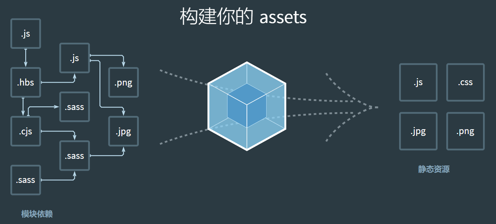
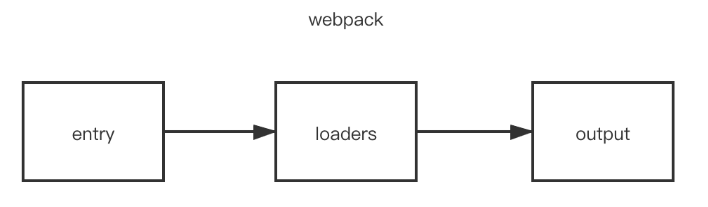

说说webpack中常见的Loader？解决了什么问题？
参考答案
一、是什么
loader 用于对模块的"源代码"进行转换，在 import 或"加载"模块时预处理文件
webpack做的事情，仅仅是分析出各种模块的依赖关系，然后形成资源列表，最终打包生成到指定的文件中。如下图所示：

在webpack内部中，任何文件都是模块，不仅仅只是js文件
默认情况下，在遇到import或者load加载模块的时候，webpack只支持对js文件打包
像css、sass、png等这些类型的文件的时候，webpack则无能为力，这时候就需要配置对应的loader进行文件内容的解析
在加载模块的时候，执行顺序如下：

当 webpack 碰到不识别的模块的时候，webpack 会在配置的中查找该文件解析规则
关于配置loader的方式有三种：
- 配置方式（推荐）：在 webpack.config.js文件中指定 loader
- 内联方式：在每个 import 语句中显式指定 loader
- CLI 方式：在 shell 命令中指定它们
配置方式
关于loader的配置，我们是写在module.rules属性中，属性介绍如下：
rules是一个数组的形式，因此我们可以配置很多个loader
- 每一个
loader对应一个对象的形式，对象属性test为匹配的规则，一般情况为正则表达式
- 属性
use针对匹配到文件类型，调用对应的loader进行处理
代码编写，如下形式：
module.exports = {
module: {
rules: [
{
test: /\.css$/,
use: [
{ loader: 'style-loader' },
{
loader: 'css-loader',
options: {
modules: true
}
},
{ loader: 'sass-loader' }
]
}
]
}
};二、特性
这里继续拿上述代码，来讲讲loader的特性
从上述代码可以看到，在处理css模块的时候，use属性中配置了三个loader分别处理css文件
因为loader 支持链式调用，链中的每个 loader 会处理之前已处理过的资源，最终变为js代码。顺序为相反的顺序执行，即上述执行方式为sass-loader、css-loader、style-loader
除此之外，loader的特性还有如下：
- loader 可以是同步的，也可以是异步的
- loader 运行在 Node.js 中，并且能够执行任何操作
- 除了常见的通过
package.json的main来将一个 npm 模块导出为 loader，还可以在 module.rules 中使用loader字段直接引用一个模块 - 插件(plugin)可以为 loader 带来更多特性
- loader 能够产生额外的任意文件
可以通过 loader 的预处理函数，为 JavaScript 生态系统提供更多能力。用户现在可以更加灵活地引入细粒度逻辑，例如：压缩、打包、语言翻译和更多其他特性
三、常见的loader
在页面开发过程中，我们经常性加载除了js文件以外的内容，这时候我们就需要配置响应的loader进行加载
常见的loader如下：
- style-loader: 将css添加到DOM的内联样式标签style里
- css-loader :允许将css文件通过require的方式引入，并返回css代码
- less-loader: 处理less
- sass-loader: 处理sass
- postcss-loader: 用postcss来处理CSS
- autoprefixer-loader: 处理CSS3属性前缀，已被弃用，建议直接使用postcss
- file-loader: 分发文件到output目录并返回相对路径
- url-loader: 和file-loader类似，但是当文件小于设定的limit时可以返回一个Data Url
- html-minify-loader: 压缩HTML
- babel-loader :用babel来转换ES6文件到ES
下面给出一些常见的loader的使用：
css-loader
分析 css 模块之间的关系，并合成⼀个 css
npm install --save-dev css-loaderrules: [
...,
{
test: /\.css$/,
use: {
loader: "css-loader",
options: {
// 启用/禁用 url() 处理
url: true,
// 启用/禁用 @import 处理
import: true,
// 启用/禁用 Sourcemap
sourceMap: false
}
}
}
]如果只通过css-loader加载文件，这时候页面代码设置的样式并没有生效
原因在于，css-loader只是负责将.css文件进行一个解析，而并不会将解析后的css插入到页面中
如果我们希望再完成插入style的操作，那么我们还需要另外一个loader，就是style-loader
style-loader
把 css-loader 生成的内容，用 style 标签挂载到页面的 head 中
npm install --save-dev style-loaderrules: [
...,
{
test: /\.css$/,
use: ["style-loader", "css-loader"]
}
]同一个任务的 loader 可以同时挂载多个，处理顺序为：从右到左，从下往上
less-loader
开发中，我们也常常会使用less、sass、stylus预处理器编写css样式，使开发效率提高，这里需要使用less-loader
npm install less-loader -Drules: [
...,
{
test: /\.css$/,
use: ["style-loader", "css-loader","less-loader"]
}
]raw-loader
在 webpack 中通过 import 方式导入文件内容，该loader 并不是内置的，所以首先要安装
npm install --save-dev raw-loader然后在 webpack.config.js 中进行配置
module.exports = { ..., module: { rules: [ { test: /\.(txt|md)$/, use: 'raw-loader' } ] }}file-loader
把识别出的资源模块，移动到指定的输出⽬目录，并且返回这个资源在输出目录的地址(字符串)
npm install --save-dev file-loaderrules: [ ..., { test: /\.(png|jpe?g|gif)$/, use: { loader: "file-loader", options: { // placeholder 占位符 [name] 源资源模块的名称 // [ext] 源资源模块的后缀 name: "[name]_[hash].[ext]", //打包后的存放位置 outputPath: "./images", // 打包后文件的 url publicPath: './images', } } }]url-loader
可以处理理 file-loader 所有的事情，但是遇到图片格式的模块，可以选择性的把图片转成 base64 格式的字符串，并打包到 js 中，对小体积的图片比较合适，大图片不合适。
npm install --save-dev url-loaderrules: [ ..., { test: /\.(png|jpe?g|gif)$/, use: { loader: "url-loader", options: { // placeholder 占位符 [name] 源资源模块的名称 // [ext] 源资源模块的后缀 name: "[name]_[hash].[ext]", //打包后的存放位置 outputPath: "./images" // 打包后文件的 url publicPath: './images', // 小于 100 字节转成 base64 格式 limit: 100 } } }]